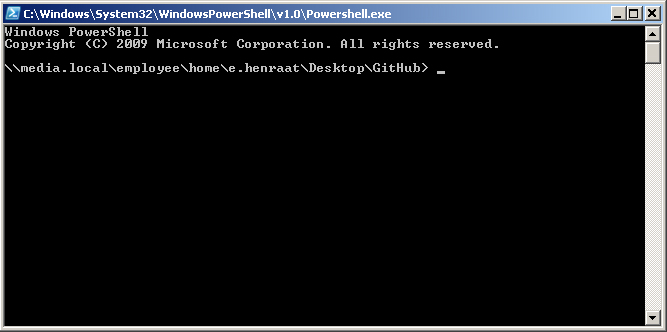

Het doel van deze opdracht is dat je in staat bent om code te delen via git hub. Bij het komende project zul je git hub ook moeten gebruiken om je gemaakte code in te leveren!
Haal de repository (oftewel project) met de naam "GitHubListMG1" binnen op je eigen computer door hem te klonen met deze url link https://github.com/erwinhenraat/GitHubListMG1.git.
De repository kun je hier online bekijken op de git hub site.
Om deze repository te kunnen klonen moet je eerst de git shell op je computer installeren. Voor windows kun je deze hier vinden. En voor Mac gebruikers download je hem hier.
Na installatie van de git shell open je het programma "Git Shell". Dit is een commandline waarmee je text commando's kunt geven. Het ziet er zo uit:
gebruik het commando cd ("bijv. cd d:/school/periode2/DIP") om naar de map te gaan waar jij de repsitory naar toe wil klonen. Als je een DIP map hebt voor deze periode is dat een mooie plek.
Als je de map hebt geopend in de git shell kun je de repository klonen met het commando git clone https://github.com/erwinhenraat/GitHubListMG1.git.
Voer evt. ook git pull uit om zeker te weten dat je de laatste versie te pakken hebt.
Als je de repository gekloond hebt op je computer kun je index.html openen en bewerken.
Vul jullie namen in de onderstaande lijsten in, als list items, binnen de juiste klas en vervolgens op alphabetische volgorde.
Schrijf je voor en achtenaam en een link naar je github account.
Als je naam en url op de juiste plek in de lijst staat gebruik je git add "index.html", git commit -m "ik heb mijn naam en url toegevoegd" en git push om je aanpassing weer naar de online repository te sturen.
controleer in de online repository of het gelukt is. Dus of jouw naam en url ook daar in de lijst staat.